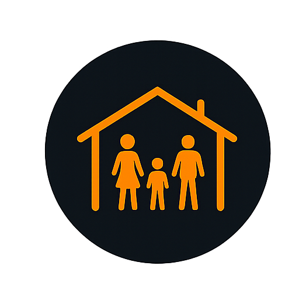
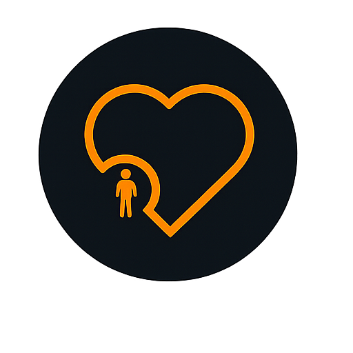

Family & Community Support
Helping households access guidance, stability, and practical care.
Youth-led • Community-driven • Driving Change
Teens With Vision supports young people and households through four focused impact areas: family support, food security, education & skills, and care & wellbeing.


“Where one is born does not have to determine where one ends up.”
About Us
Our story. Teens With Vision is a youth-led, community-based organisation shaped by lived experience in township communities. We understand the barriers that keep young people from learning, growing, and thriving.
Our purpose. We work to strengthen households, remove barriers to education, improve wellbeing, and connect communities with practical support that creates long-term change.
Programs
Each program uses the circular icon set and can expand to show the story, problem addressed, and gallery images.
Helping households access guidance, stability, and practical care.
Addressing hunger through feeding initiatives and food assistance.
Supporting learning, access, and future-ready skills.
Promoting dignity, safety, health awareness, and emotional support.
This program exists because many households face instability, isolation, and limited access to support networks. It responds to family stress by connecting people to practical assistance and community care.
Problem addressed: household instability, lack of guidance, and vulnerable children needing support.


Food support exists because hunger affects concentration, attendance, and dignity. The program helps families and children access meals and emergency food relief when it matters most.
Problem addressed: hunger, food shortages, and the daily pressure of unreliable meals.


Education support removes barriers that stop learners from participating fully. The program helps young people with access, skills, guidance, and opportunities to grow.
Problem addressed: educational barriers, lack of resources, and limited skills pathways.


This program promotes dignity, wellness, and safety through support that improves emotional and physical wellbeing in the community.
Problem addressed: health challenges, stress, neglect, and poor wellbeing.


Team
Replace the sample cards with the actual team photographs, names, roles, and short biographies.

Founder & Community Lead
Joined to turn lived experience into action and build a safer path for young people in the community.

Program Coordinator
Joined to support outreach, coordinate projects, and keep community responses organised and consistent.

Volunteer Lead
Joined to connect volunteers to meaningful work and make participation simple, safe, and useful.

Outreach & Support
Joined to help families, support events, and build trust through consistent community presence.
Impact
Beneficiaries Reached
Volunteers
Partners
Successful Initiatives
Become a Volunteer
Volunteers can help with outreach, events, logistics, digital support, mentoring, and community engagement.
Volunteering supports the community directly, strengthens your own skills, and connects you with a youth-led organisation that values contribution.
Clear roles, practical tasks, respectful communication, and a strong focus on service.
Contact Us
Use the buttons below to open email or WhatsApp. Replace the WhatsApp placeholder number before publishing.